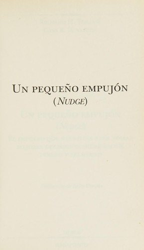

Un pequeño empujónRichard H. Thaler y Cass R. Sunstein

Un pequeño empujón
Richard H. Thaler y Cass R. Sunstein
Introduce la idea de que pequeños cambios en cómo se presentan las opciones pueden mejorar decisiones sobre salud, ahorro o alimentación sin quitar libertad.
- Publicado originalmente
- 2008
- Enfoque
- Divulgación científica
- Para quién
- Público general
- Ficha bibliográfica
- Open Library
Este libro tiene derechos de autor, así que no lo alojamos. Te dejamos la ficha para que sepas de qué trata y lo busques en una librería o biblioteca.
Psicología económica y toma de decisionesEconomía conductualPensamientos, creencias y sesgos cognitivosEfecto de anclaje